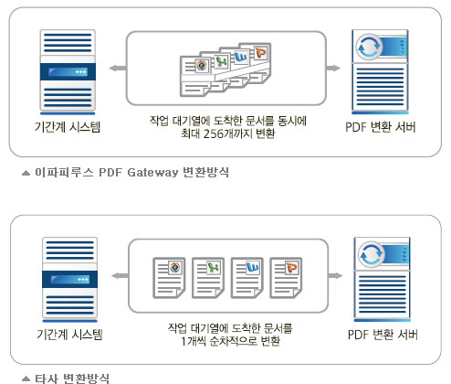
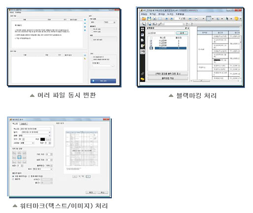
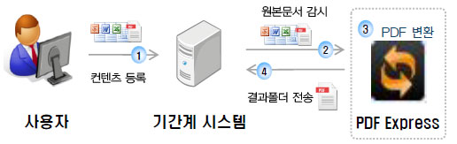
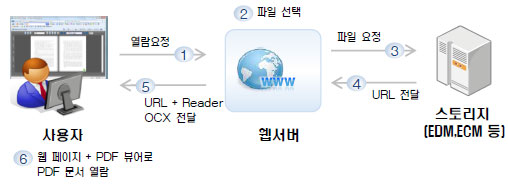

다큐먼트 솔루션
다큐먼트 솔루션(ePapyrus)
PDF 연관 솔루션으로 다양한 포맷을 PDF문서로 변환이 가능한 PDF Gateway, PDF 문서 열람을 위한 전용 뷰어
SecureReader, PDF변환용 클라이언트 소프트웨어인 PDF Pro5, 그리고 다양한 포맷을 PDF로 변환할 수 있는
PDF Express 제품군으로 요구되는 다양한 형태의 문서를 PDF 포맷으로 통일하여 문서를 효과적으로 관리할 수 있고
열림/공유/유통 과정에서도 생산성과 안정성을 확보할 수 있는 솔루션입니다.
-
 주요기능
주요기능
- 여러 종류의 포맷을 PDF 파일로 변환: MS오피스/ 아래한글/ 100여종 이상의 이미지파일, 웹 문서, AutoCAD등
- 여러 종류의 문서를 PDF로 변환
- 파워 풀 한 멀티스레드: 최대 256개의 문서를 동시에 변환
- PDF 문서 암호화: 128비트 암호화 알고리즘으로 보안 옵션 설정
- 워터마크 기능: PDF 문서에 텍스트와 이미지 형태의 워터마크 삽입
- PDF문서 편집 기능: 텍스트 및 페이지 추출, PDF문서 병합, 책갈피 삽입 및 추출, 품질 설정 기능
특장점
- 강력한 멀티스레드 지원: 싱글스레드 방식에 비해 속도가 월등히 빠르며 에러 파일 발생 시에도 안정적
- 최적의 변환 방식 채택: 문서 종류에 따라 Postscipt 방식과 OLE Automation 방식 중 최적의 방식을 선택하여
- PDF 변환 가능
- 기간계 시스템과 연동: 다양한 시스템 연동 수단을 지원하여 기간계 시스템과 쉽게 연동
- 안정적인 PDF 변환: 로드 밸런싱(분산 처리) 구현으로 안정적인 PDF 변환 가능
활용 분야
- EDMS나 ECM으로 문서 업로드 시 PDF로 변환 후 보존

- 전자결재 시스템과 연동하여 기안문과 첨부파일을 하나의 PDF 파일로 보존
- 게시판에 업로드하는 파일을 PDF로 자동 변환
- ERP 시스템 내 배포/보존용 파일을 PDF로 변환
- PDM 내 편리하고 안전한 도면 배포/관리/보존
- 전자도서관 서비스
- 공인전자문서센터 보존
- 대외문서 배포시 워터마크 삽입 -
개요
모든 종류의 문서를 PDF로 변환하는 기능을 비롯하여 PDF 문서 열람, 내용 편집, 주석 등
다양한 PDF 관련 작업을 쉽고 빠르게 할 수 있는 PDF 소프트웨어
주요 기능
간편하고 빠른 문서 변환, 안전한 문서 유통, 편리한 문서 편집 기능, 쉽고 다양한 기능
특장점
- 보안 설정, 업무 시간을 단축시키는 멀티플레이어, 문서 검토에 용이한 문서 전용 편집기

- 사용 목적에 따른 퀄리티 구현, 폰트 걱정을 한꺼번에 해결 -
개요
PDF Express는 간단한 설정만으로 기존의 기업 내 전산 인프라(ERP, 그룹웨어, 홈페이지 등)와
손쉽게 연동할 수 있는 PDF 자동 변환 제품
시스템 구성도

-
개요
- 웹으로 게시하는 문서의 복사, 수정, 저장, 인쇄 등을 통제하여, 중요한 문서를 보호하고
- 안전하게 문서를 배포, 유통
- 온라인 뷰어로 단일 구성 및 스트리밍 서버와 연계 구성 가능
시스템 구성도
